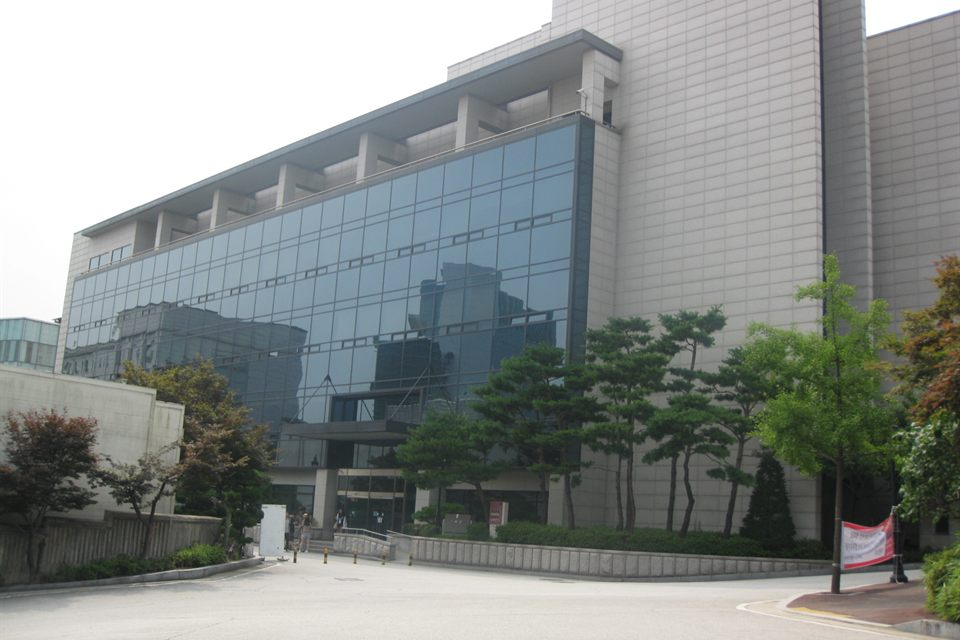

고려대학교 정시 반영표는 비율(%)이 아니라 점수로 적혀 있습니다. 그래서 "국어 몇 퍼센트"만 찾다가 정작 중요한 칸을 놓치기 쉽습니다. 이 글은 전형 소개가 아니라, 그 점수표를 "그래서 어느 과목을 먼저"로 바꿔 읽는 글입니다. 고3 수학과외와 국어·탐구 시간을 어떻게 나눌지 정하는 기준이 됩니다.
| 계열 | 국어 | 수학 | 탐구 | 영어·한국사 |
|---|---|---|---|---|
| 자연·의학 | 200 | 240 | 200 | 등급별 감점 |
| 인문·체능 | 200 | 200 | 160 |
자연·의학은 세 영역 합이 640점이라 수학이 대략 3분의 1을 조금 넘게 가져갑니다. 인문·체능은 합이 560점이고 국어와 수학이 같은 무게, 탐구가 가장 가볍습니다. 사이버국방학과·체육교육과·디자인조형학부처럼 수능 외 요소가 들어가는 모집단위는 구조가 다릅니다.
고려대학교는 영어를 반영점수에 넣지 않습니다. 대신 등급별로 총점에서 깎습니다. 1등급은 감점이 없고, 2등급부터 등급이 한 칸 내려갈 때마다 3점씩 깎이는 구조입니다. 한국사도 같은 방식이지만 상위 등급에서는 감점이 없고, 낮은 등급에서만 적용됩니다.
이 구조가 뜻하는 바는 분명합니다. 영어에 시간을 더 넣어 2등급을 1등급으로 만드는 이득은 3점입니다. 같은 시간을 수학이나 탐구에 넣었을 때 표준점수가 얼마나 움직이는지와 견줘 보면, 영어는 대체로 "지키는 과목"이 됩니다. 다만 3등급 아래로 내려가 있다면 이야기가 달라집니다. 감점이 계속 쌓이는 구간이라 그때는 올릴 값어치가 있습니다.
자연·의학 계열에서 수학은 240점으로 가장 큽니다. 국어와 탐구가 각각 200점이니 수학 한 영역이 국어보다 한 뼘 더 무겁습니다. 여기에 하나가 더 붙습니다. 자연계열과 의과대학 지원자가 과학탐구에 응시하면 해당 과목 변환점수에 각 3%의 가산점이 더해집니다. 탐구 200점에 얹히는 가산이라 결코 작지 않습니다.
그래서 순서는 수학 → 탐구 → 국어 → 영어가 됩니다. 수학이 정체돼 있다면 탐구를 먼저 손보는 쪽이 이 점수표에서는 더 빨리 돌아옵니다. 참고로 수학은 확률과 통계·미적분·기하 중 어느 과목을 선택해도 인정되고, 탐구도 지원 계열과 관계없이 사회탐구와 과학탐구를 모두 인정합니다. 다만 자연계열의 과학탐구 가산점을 생각하면 선택은 대체로 정해집니다.
인문·체능 계열은 국어 200점, 수학 200점으로 두 과목이 정확히 같습니다. 탐구는 160점으로 가장 가볍습니다. "인문이니 국어부터"라고 생각하기 쉽지만 이 표에서는 국어에만 시간을 몰 이유가 없습니다. 두 과목 중 지금 점수가 더 흔들리는 쪽부터 잡는 것이 맞습니다. 국어가 안정적이라면 고3 국어과외는 감을 유지하는 정도로 두고 수학에 시간을 옮기는 판단이 가능합니다.
탐구 160점은 가볍지만 두 과목이 나눠 가지는 몫입니다. 한 과목이 무너지면 다른 영역으로 메우기 어렵다는 점은 계열과 상관없이 같습니다.
학생 수준에 맞는 선생님을 24시간 안에 추천해 드려요. 상담은 무료입니다.